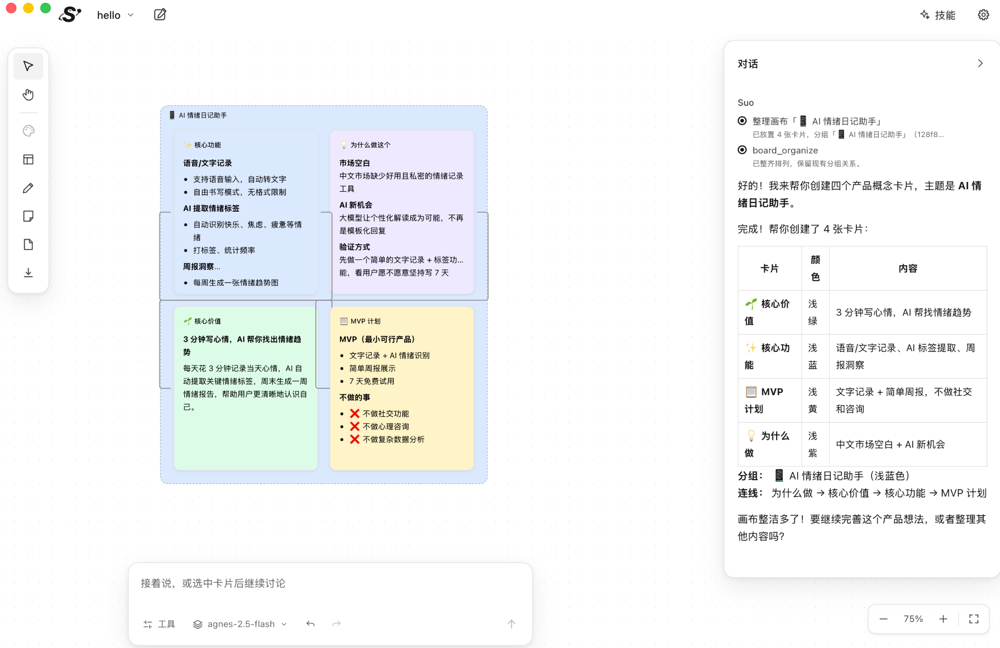

给产品经理的 AI 画布工作台 · macOS · 免费开源
把零散的资料，
织成一份能评审的文档。
访谈记录、竞品截图、会议纪要和一闪而过的想法，都摆在同一张画布上。Suo 读得懂这些资料和你画的连线，陪你把一个想法推进成机会判断、PRD 和调研结论。
Apple 芯片 · macOS 13.5 及以上 · 使用你自己的模型 Key

画布
你画的每一根线，Suo 都会顺着去想
卡片之间可以连线，线上写清关系：导致、依赖、支持、反驳、拆解为、验证。选中一张卡片提问时，和它相连的卡片和这些关系会一起交给 Suo，它会沿着你的思路推理，也会指出哪一环还缺证据。
录音在手机，笔记在文档，结论在群聊。
来自访谈里的自述，还没有实际统计。
把录音转成文字，再按问题归档。
Suo
沿着这两条线看，“散落”导致“耗时”目前只有访谈里的说法。建议先统计一周真实的整理时长，确认两小时成立，再决定是否先做自动转写。
以上为示意。
功能
资料、想法、对话和文档，在一张画布上
自由摆放的画布
便签、文档、草图和文件卡片随意摆放，可以连线、成组（⌘G）、上色、加标签和置顶。拖动时有对齐参考线。便签和文档支持 Markdown，文档能导出为 Markdown 文件。
直接读资料
PDF 可以连续阅读，Word、CSV、网页、图片和音视频都能在卡片里打开。Suo 只根据实际读到的内容回答，读不全时会告诉你缺了哪部分。
会动手的 AI
Suo 能读取画布和资料，联网搜索、读取网页，把结果整理成卡片，撰写和修改文档，也能帮你分组、排列、上色。需求不清楚时，它会给出几个选项让你选。
随时可以撤销
Suo 对画布的每一次改动都能用 ⌘Z 撤销，回复也可以随时停止。会话自动保存，可以重命名、置顶，删除后还能从回收站恢复。
工作方式
像一个靠谱的产品搭档那样工作
Suo 的判断标准写在开源的 agent.md 里，你可以直接读到它被要求怎么做。
先弄清问题，再谈方案
你提一个功能，它会先问清楚是谁、在什么场景下需要、有什么证据，而不是马上列实现步骤。
分清事实、推断和假设
访谈原话、它的推断和待验证的假设分开写，用户的描述不会被当成已经验证的市场事实。
不编数字
缺数据的地方写“尚未验证”，再给出最小的验证办法，不会用编出来的数字填满表格。
只说做到了的事
没读到的资料不说读过，没执行的操作不说完成。工具做不到时，它会说清楚哪项做不了，以及接下来能做什么。
技能
自带十二个产品经理技能
遇到对应的任务，Suo 会自己加载合适的方法。你也可以在 App 里导入自己写的技能。
ai-product-initiationpm-opportunity-assessmentpm-material-synthesispm-user-researchpm-competitive-researchpm-requirements-prdpm-prdpm-prioritization-roadmappm-metrics-experimentspm-ai-product-designpm-ai-evaluationproduct-manager模型
使用自己的模型，会话和资料在本机保存
Suo 不提供模型，也不收费。在设置里选一家服务，贴上自己的 Key，就能从这家服务的模型列表里挑一个来用。会话和资料保存在本机；发送时，问题、相关资料和画板简况（标题、分组、连线）会发送到你配置的模型服务。